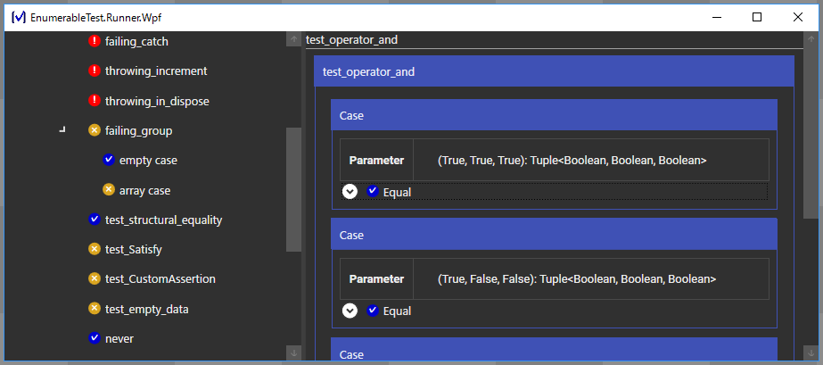

追記: 現在は推奨していません。
EnumerableTest という .NET 向けの単体テストフレームワークを作成しました。
具体的な使い方は チュートリアル を参照してもらうとして、ここでは宣伝的な内容と、実装時の苦労話、今後の展望について述べます。
特徴
EnumerableTest の最大の特徴は「パラメーター化されたテスト」(テーブル駆動テスト)を書きやすいことです。
// 演算子 && の挙動をテストする。
public IEnumerable<Test> test_operator_and()
{
return
ParameterizedTestBuilder
.Case(true, true, true)
.Case(true, false, false)
.Case(false, true, false)
.Case(false, false, false)
.Run((left, right, expected) =>
(left && right).Is(expected)
);
}
このコードで重要なのは、次の2点です。
- テストデータの型がコンパイル時に検査される。
- 4つのテストケースのうち、いずれかが表明に違反したり例外を投げたりしても、すべてのテストが実行される。
ParameterizedTestBuilder の実装に用いられている2つの特徴について説明します。
継続する表明
EnumerableTest の表明は、失敗しても実行を停止しません。例えば、次のテストメソッドは2つの表明を含みますが、前者は失敗して、後者は成功します。
public IEnumerable<Test> MyTest()
{
yield return 0.Is(1); // 失敗する。
yield return 0.Is(0); // 成功する。
}
xUnit.NET や NUnit などでは「表明が失敗するとテストの実行が止まる」仕様になっています。この場合、縦にずらずらと表明を並べると、途中で止まったときに後ろのテストの結果が分からなくなり、厄介です。そのため、テストメソッドには表明を1つだけにするべきだといわれています。
EnumerableTest の継続する表明ではそのような問題はありませんので、縦にずらずらと表明を並べても問題ありません。実際、先ほどの test_operator_add は縦に4つの表明を並べるのと実質的に同じコードになります。
テストのグループ化と例外の捕捉
EnumerableTest ではテストのシーケンスを1つのテストとして扱う機能があります。これは2つの機能を持ちます。
1つ目は、テストのシーケンスを意味的なまとまりごとにグループ化するとことにより、テストの結果を見やすくすることです。というのも、1つのテストメソッドに表明をずらずらと並べていくと、いざ違反した表明を見つけたときに、その表明がどのテストケースに対応するのかが分かりづらいのです。
ParameterizeTestBuilder が生成するテストは、テストケースごとにテストをグループ化しています。どの表明がどのテストケースに対応するかは一目瞭然です。

また、テストのグループには例外を捕捉する機能もあります。すなわち、グループ内のいずれかのテストが例外を送出した場合、そのグループの実行は中断されますが、例外はテストグループにより捕捉されます。これにより、 グループ化されたテストは例外を送出しない ことが保証されます。
※スタックオーバーフローは例外です。
例えば次のコードは、2つのテストメソッド Test1, Test2 をそれぞれグループ化して実行しますが、仮に Test1 が例外を送出しても、それはグループ化を行うメソッド ToTestGroup により捕捉されますので、Test2 が実行されなくなることはありません。
public IEnumerable<Test> test()
{
yield return Test1().ToTestGroup();
yield return Test2().ToTestGroup();
}
冒頭の test_operator_add でも、各テストケースはグループ化されており、例外を漏らさないようになっています。
苦労話
次に EnumerableTest のテストランナー実装時の苦労話をします。
プロセス内リモート通信
コンソール版のテストランナー開発は、ただただ書くだけなので簡単でした。.NET は動的リフレクションの機能が豊富で助かります。問題は WPF (GUI) 版です。
コンソール版の実行時の流れは「テストアセンブリーをロード→テストを実行→結果を表示→終了」という具合ですが、WPF版は次のようになります。
- テストアセンブリーをロード
- テストを実行
- 結果を表示
- メインループ
- テストアセンブリーを アンロード
- テストアセンブリーが更新されるまで待機
- テストアセンブリーが更新されたら再ロード
- テストを実行
- 結果を 更新
なお、テストアセンブリーとは、テストメソッドが定義されたファイル (通常は .dll) のことです。それをロードして、実際にテストを実行して結果を表示するアプリのことを、テストランナーと呼んでいます。
テストランナーは、テストアセンブリーに定義されたテストメソッドを読み込んで実行するわけですが、そのためにはテストアセンブリーを「アプリケーションドメイン (AppDomain)」というものにロードする必要があります。アプリケーションドメインはどのアプリケーションも1つは持っているので、そこにアセンブリーを入れればいいかと思ったのですが、そうはいきませんでした。
問題は、テストアセンブリーがロードされているかぎり、その .dll ファイルがロックされてしまうことです。すなわち、ビルドしてもテストアセンブリーを更新できない状態になります。ビルドするたびにいちいちテストランナーを閉じて開き直すのはめんどうですから、テストランナーはテストの実行が終わったときにテストアセンブリーをアンロードするべきです。そのアンロードが問題でした。
アプリケーションドメインからアセンブリーをアンロードする方法はありません。その代わり、アプリケーションドメイン自体をアンロードすることはできます。すなわち、テストランナーはこういう手順を踏む必要があるわけです。
- テストを実行するためのアプリケーションドメインを作る。
- テストを実行する。
- テストの実行が完了したとき、結果を元のアプリケーションドメインに渡す。(←めんどくさい)
- 作成したアプリケーションドメインを削除する。
問題となるのは、テストを実行した結果をウィンドウなどに表示するには、まずデータをテストランナーのアプリケーションドメインに移す必要があるということです。というのも、アプリケーションドメインの間では基本的に参照を渡すことができないので、一部のデータしかやりとりできません。可能なのは MarshalByRefObject を継承したオブジェクトの参照渡しと、Serializable 属性のついたオブジェクトの値渡しです。前者はただの参照渡しなので、オブジェクトが居住するアプリケーションドメインをアンロードしてしまうと、使用できなくなります 。
テストの実行結果は、テストの実行の終了後にも参照したいわけですから、値渡ししなければなりません。したがって、すべてのデータに Serializable 属性をつける必要があります。しかし、テストの結果のデータにはユーザーが定義したクラスのインスタンスが含まれることもあります。例えば、x.Is(y) (x が y に等しいという表明) の結果には、情報として x と y の値 (どんな型かは分からない) も含まれているべきでしょう。これらの型に Serializable 属性をつけてもらうわけにもいきません。
そういうわけで、 EnumerableTest ではデータをシリアライズ可能な形式 (MarshalValue) に変換してから、元のアプリケーションに送り返すようになっています。MarshalValue は、データのプロパティの値と、コレクションの中身 (this[]) からなる辞書のようなものです。
要するに単一プロセスでリモート通信みたいなことをしているわけです。コンソール版だけでよかったんじゃ……
余談: Persimmon
.NET 言語 F# には Persimmon という単体テストフレームワークがあり、EnumerableTest の着想はここから得ました。ぶっちゃけ Persimmon のほうが便利なので、F# を使える状況ならそちらを使いましょう。
あまりに便利なので、筆者は C# を書くときですら、テストを F# + Persimmon で書いています。F# の型推論は素晴らしい……
もともと EmumerableTest は自分用に作っていたのですが、IEnumerable<Test> やら yield return やらいちいち書くのが思いのほかめんどくさいということに気づいてしまったのでやめました。